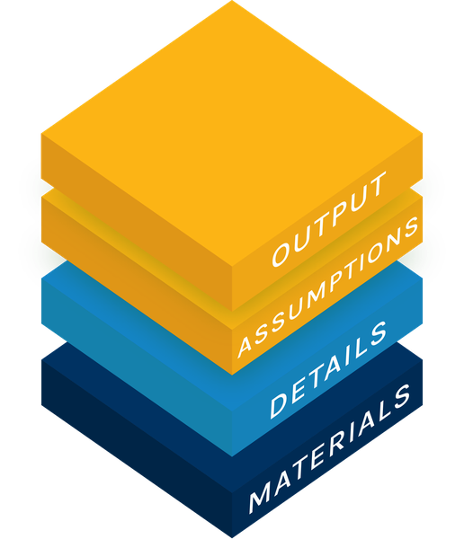

Open Policy Analysis for:
The Net Present Value of the Billionaire Tax Act Work in progress

Three layers to understand the paper
What the Act is worth to the state →
A precomputed grid over the seven inputs of the authors' Monte Carlo, 2,187 combinations of three levels each, labelled data or guesswork, with the two preferred estimates (SSRN and NBER) side by side. Each cell holds the exact expected NPV and the exact share of negative outcomes.

The paper's claim and machinery, opened up in two forms: read in full, or taught step by step.
The full reproduction →
The paper's sections in order (the revenue chain, the income tax, the perpetuity, Tables 8 to 10, the Monte Carlo), then what the NBER revision changes. Every equation explained in plain language and every number read from the pipeline.
Teaching materials →
A slide deck to teach the argument to yourself or others: the one equation, where each input comes from, why a perpetuity decides the sign, and what to argue about.
The repository on GitHub →
The R pipeline (built with {targets}) and its Python twin, the test suite, every exported CSV, the source
manifest with SHA-256 hashes, and the nine mismatches between the papers, their READMEs and
their code. A guided summary is on the materials page, linked in the text below.

What the model says
The Act collects a wealth tax once; billionaires who leave stop paying California income tax for ever. The authors value that lost stream as a perpetuity and subtract it: NPV = revenue − (share of the income tax base that leaves) × (annual income tax) / (discount rate). They report the average NPV over 100,000 random draws of those inputs. The project fixed in advance that this side is shown as two estimates side by side: the March SSRN anchor and the September NBER revision. Amounts are billions of dollars.
| SSRN, Mar 2026 | NBER, Sept 2026 | |
|---|---|---|
| Mean NPV to the state, as printed | −24.7 | −38.9 |
| Share of outcomes below zero, as printed | 71% | 85.2% |
| Wealth tax revenue, the paper's headline | about 40 (35 to 46) | about 30 (28.4 to 35.6) |
| Mean NPV, authors' seeded run, reproduced | −24.77 | −38.89 |
| Mean NPV, exact expectation of the same draws | −24.71 | −38.98 |
| Mean revenue in the Monte Carlo's draw | 51.26 | 36.00 |
| Mean present value of income tax lost | 75.96 | 74.98 |
Printed values from SSRN PDF pp.1, 14 and 20 and NBER PDF pp.1, 23 and 35. Three things the numbers show. First, the result is driven by the loss side: roughly 75 of present value lost against a few tens collected, because at the draws' 1.5% to 4.5% rates a dollar a year for ever is worth 22 to 67 dollars today. Second, the SSRN Monte Carlo draws revenue with a mean of 51.26, above the paper's own preferred "about 40", while the NBER draw's mean, 36, is its litigation-discounted ceiling (0.5 × 72). Third, of the seven inputs that move the answer, six are guesswork; the explorer shows how far each one moves it. Whether the income tax loss really lasts for ever is the main point the BSZ report (Boll, Saez and Zucman) disputes.
What reproduces
| Published result | Result |
|---|---|
| Revenue chain, Sec 4 (SSRN pp.10-14) | 94.30 / 67.51 / 55.10 / 45.59 from the authors' workbook; the paper prints 94.20 for the first, which its later steps also use (mismatch 6) |
| Pareto fit and Table 8, income tax (p.17) | alpha 1.44; all 21 cells round to the printed digit, replaying the authors' random-number (RNG) stream |
| Tables 9 and 10, NPV and break-even (pp.19-20) | all 18 and all 9 cells match the printed digit |
| SSRN Monte Carlo, Sec 5.5 (p.20) | median and share negative match; mean and SD (standard deviation) do not quite (mismatch 9). The printed mean equals the exact expectation, not the shipped seed's run |
| NBER revenue and Monte Carlo (pp.22-23, 35) | collectible 29.57 (printed 29.6), range 28.40 to 35.59; mean, median, SD and share negative within Monte Carlo error |
"Match" means the reproduced value rounds to the printed digit for deterministic figures, and lies within four Monte Carlo standard errors for simulated ones. The test suite holds every comparison; the materials page gives its current count.
Along the way we found nine mismatches between the papers, their READMEs and their code. We reproduce the code as shipped and record each one:
- Eq. 22 prints the revenue ceiling as 67.1; the code and the text use 67.51.
- The text derives a growing perpetuity, C/(r − g), with C the annual income tax lost, r the real discount rate and g the growth rate of that tax base (SSRN p.18); the Monte Carlo divides by the plain rate.
- The NBER code labels the same 1.5% to 4.5% draw (r − g), so one interval stands for two concepts.
- The NBER ceiling is 72 in the script, 72.06 in the README and 72.05 in the person-level data.
- The NBER litigation weight q = 0.50: the code never multiplies by q; drawing revenue uniformly from 0 to 72 gives the same mean, 0.5 × 72, but a different distribution.
- The workbook's baseline is 94.30; the text and every later step use a typed 94.2.
- Two memo cells in the workbook read from the wrong sheet (no headline number affected).
- Table 9's central revenue, 42.0, is a typed literal with no derivation.
- The SSRN Monte Carlo's printed mean and SD do not come out of the shipped seeded script.
Full text, with file and line references: materials page.
How AI was used in this exercise, and what has been verified
This work was a collaboration between the author and Claude Code (Opus and Sonnet models) across many sessions, not an AI working alone. The table records who led the work on each public object of the RJKDC side, using the CRediT contributor roles. The author gave these answers in a questionnaire on 2026-10-01; they were not inferred from commit history. The author answered the roles once and applied the same answers to every object on all three pages, and answered the verification question object by object. The table groups the 14 roles into three: ideas and direction (conceptualization, methodology, supervision, project administration), doing the work (data curation, formal analysis, investigation, software, validation, visualization) and writing (original draft, review and editing). Funding and resources do not apply. Each square in a cell is one role, coloured by who led it (key below the table). The last column is not part of CRediT. It records how closely the author has checked the object. The role-by-role answers are in CREDIT.md.
| Object | Ideas and direction | Doing the work | Writing | Human verification |
|---|---|---|---|---|
| Explorer Open Output | Lightly checked | |||
| Report Open Analysis | No human review | |||
| Slides Open Analysis | No human review | |||
| Repository Open Materials | No human review | |||
| Overview page this page | No human review |
Human verification uses three levels: no human review, lightly checked (checked, but the author cannot yet explain it clearly) and understood (the author can explain it to others). The automated test suites are mechanical checks, not an outside review. No other person has verified this work, and the original authors have not reviewed it.
25e84dd, and the source manifest lists each file
with its SHA-256 hash.